SPORTIVE MEDICINE ALCHEMY IN GDR
I will prescribe regimens for the good of my patients according to my
ability and my judgment and never do harm to anyone. Hippocratic Oath.
The motto of the Olympic movement is hendiatris Citius, Altius, Fortius , which is Latin for "Faster, Higher, Stronger". Nothing more normal for it to appear on the stamps issued by the postal authority of the former German Democratic Republic (GDR - DDR in German) shown below, that commemorates the 90th Congress of the International Olympic Committee in East Berlin, 1980. It is even so normal that the stamp issued by DDR in 1971, and commemorating the 20 years of existenceof the National Olympic Committee to be inscribedwith "Mens fervida in corpore lacertoso", which means "A fiery spirit in a muscular body", both expression originated in the proposals of the founder of the modern olympic games, the baron Pierre de Coubertin.
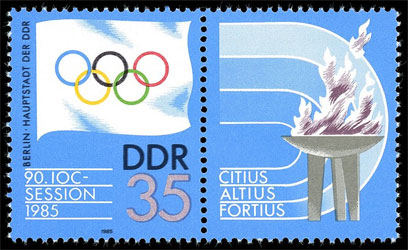
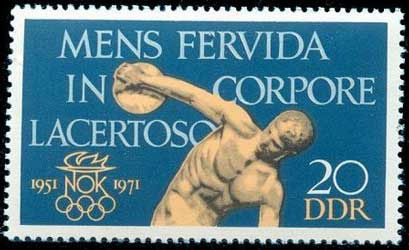
The goal of this philatelic page is to lift the veil that covers the means by which, for three decades, East Germans ran, swam and shot-putted their way to glory, winning Olympic gold medals, setting world records and - apparently - demonstrating the superiority of communism. This is not something that can be directly inferred, for example, from the images of the 84 (!) stamps that were dedicated by the GDR postal authority to the Olympic Games only but it shows what importance was attached to sport and, especially, to its results.
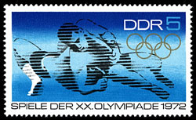
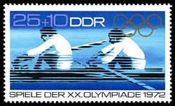
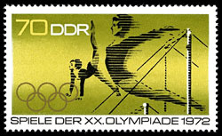
The aim was to show the superiority of the communist regime to its capitalist neighbor West Germany. For example at the 1968 Mexico City Olympics, the GDR team collected nine gold medals. Four years later the total was 20, reaching the top three in the medals table, with the United States and the Soviet Union, and in 1976 it doubled again to 40. The East German sport people had fantastic results not at the Olympic Games only. As an another example, in 1974, East German women won 11 of the 13 swimming events.
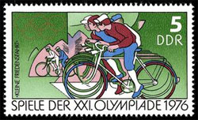
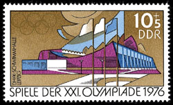
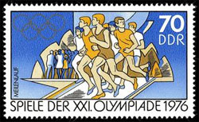
The whole world wondered how was it possible for a country of 17 million only and the answers to these legitimate questions followed, even if very slowly. The definitive answers came in August 1993, after the former GDR had disbanded itself to accede to the Federal Republic of Germany in 1990, the records were opened and the evidence was there that the Stasi, the GDR state secret police, supervised systematic doping of East German athletes from 1971 until reunification in 1990.
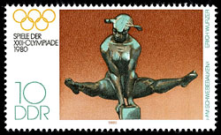
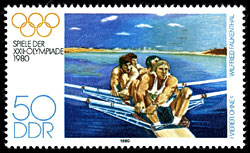
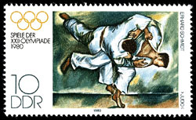
Doping existed in other countries, but the difference with East Germany was that it was, even if carefully hidden, a state policy. State-endorsed doping began with the Cold War when every eastern bloc gold was an ideological victory. From 1974, Manfred Ewald, the head of the GDR's sports federation, imposed doping. A top-secret sporting medical committee including members of the East Germany's communist leadership body, regularly met to decide which members of the national squad were to be given the drugs. Ewald was quoted as having told coaches, "They're still so young and don't have to know everything." He was given after reunification a 22-month suspended sentence, to the outrage of his victims.
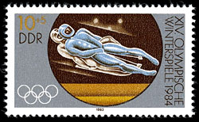
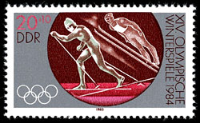
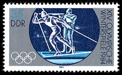
This state-sponsored doping regime played a decisive role in the dazzling success of East German athletes in international competitions - most notably at the 1976 Montreal Olympics and the 1980 Moscow games (the related stamps are displayedon this page). But it also left a terrible legacy. The victims received Oral-Turinabol - an anabolic steroid containing testosterone made by Jenapharm. The "blue bean" had astonishing powers - accelerating muscle build-up and boosting recovery times - but its subsequent side effects were catastrophic: infertility among women, embarrassing hair growth, breast cancer, heart problems and testicular cancer. An estimated 800 athletes developed serious ailments. (source1, source2)
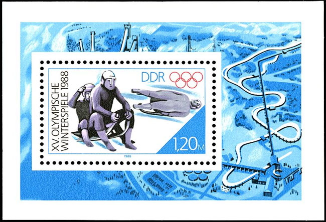
Winter Olympic Games, Calgary 1988. Mi. Block 90Germany finished paying out $4.1 million in compensation to former athletes who were the victims of the systematic doping conducted in former East Germany in 2007. The money was distributed to 157 former athletes. Another $523,402 remained unused and was put into a special fund for possible future compensations for "especially hard" cases that were not covered by the present settlement. The money was made available by DOSB and Jenapharm, the company that manufactured the anabolic steroids and other drugs given to East German athletes under a state-run doping program.
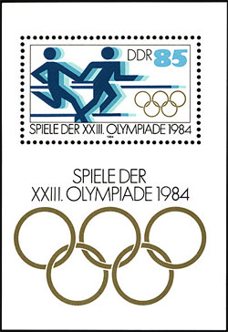
Summer Olympic Games, Los Angeles, 1984. Non issued, Mi. Block I 85.So much about the "fiery spirits in muscular bodies" of the former East German glories, many of them abused, used and discarded by the communist regime. I hope that you, my attentive reader, have noted the robotic-likes faces (if any) of the dispensable sportspersons depicted on the GDR stamps. The stamp designs were of multiple use, as shown by the miniature sheet presented above, that was prepared for the Olympic Games in Los Angeles, 1984, but was finally issued for those of Seoul 1988. For more information about its strange story please click on the miniature sheet.
Created: 05/16/2012. Revised: 1/12/2024.
Copyright © 2012 - 2024 by Victor Manta, Switzerland/USA.
All rights reserved worldwide.